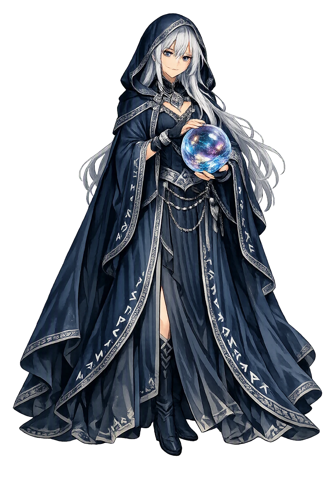
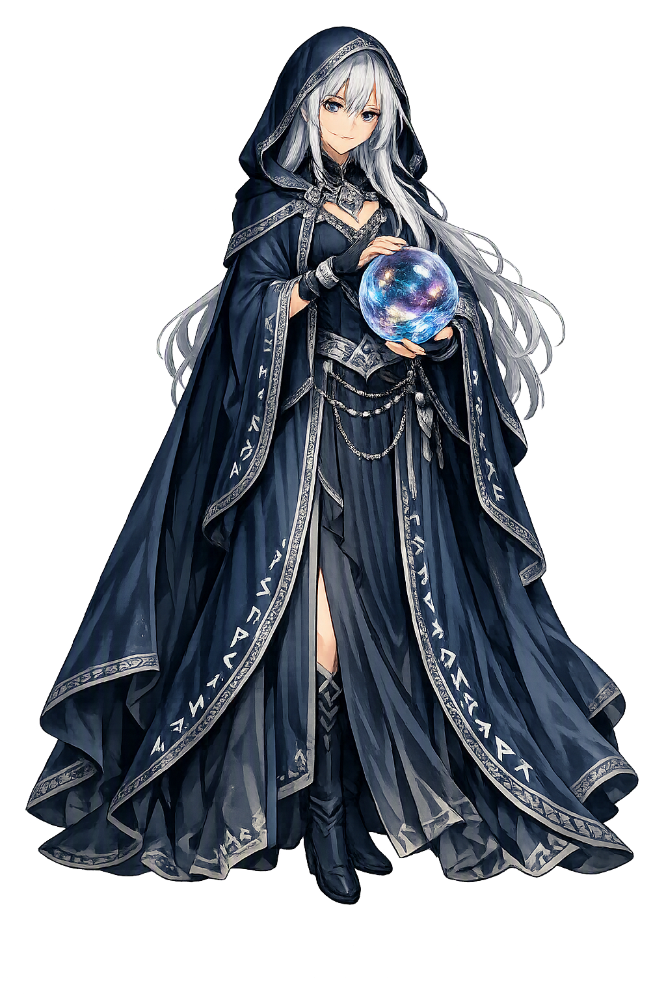

Unicode restoration and ASCII comparison
ᛋᚴᚢᛚᛏ
The name in its original Norse form. Skuld (ᛋᚴᚢᛚᛏ) is attested in the source tradition — “Debt, future”. Its original diacritics and script distinctions carry the full phonetic and orthographic weight of the source tradition.
skuld
The plain skuld form is identical to the Unicode restoration. Because this name is already written in Latin letters, no diacritics, stress, or script information were lost — only capitalization differs.
Skuld
The Unicode restoration does not need to recover lost marks for Skuld. Its value is canonical spelling and consistent cataloguing, not the reconstruction of erased orthography. The domain is readable as-is to both DNS and humanity.
Skuld.com → skuld.com
The non-ASCII characters in Skuld are encoded while the ASCII remains visible. To the DNS, it is Punycode. To humanity, it is Skuld.
How Skuld travels from ancient script to the modern URL
Owned, ideal, and ASCII forms of Skuld
Skuld
Restores ᛋᚴᚢᛚᛏ. The full Unicode restoration. skuld.com is not in the PuniCodex collection — it is watched for release; if it drops, this temple upgrades to an owned flagship.
How Skuld was spoken
The Debt That Comes Due
Skuld is the third of the three norns who dwell at the well of Urðr beneath the root of Yggdrasill, laying laws and choosing lives for the children of men — and she is the only figure in the Norse corpus counted twice. Völuspá names her among the three maidens beneath the tree, and names her again in the tally of valkyries riding to the gods' host, bearing a shield beside Skögul, Gunnr, Hildr, Göndul and Geirskögul. Snorri fuses the two offices in a single clause: with Gunnr and Rota always rides 'the youngest norn, who is called Skuld', to choose the slain and decide the battle. Her name is the noun for 'debt' — the future as what is still owed.
The holy well beneath Yggdrasill's heavenward root where the three maidens dwell — Urðr, Verðandi, Skuld — and where the gods hold their council; Völuspá sees it in the first vision of the world's frame.
The wood-slips the norns carve as they lay laws and choose lives for the children of men — fate as inscription, each life written before it is lived.
The shield Skuld bears in Völuspá's tally of valkyries riding over the earth — the one norn who also rides to the field, death's allotment delivered in person.
Snorri's phrase: 'the youngest norn, who is called Skuld', who always rides with Gunnr and Rota to decide the battle — the youngest sister carrying the last and least avoidable portion of every life.
Stories of Skuld
Skuld's dossier is short and of the highest rank: she appears where the world's frame is described, never in anecdote. The Poetic Edda names her twice — once beneath the tree, once in the air above the battlefield — and Snorri stitches the two sightings into one figure: the youngest norn who rides with the valkyries. What follows is the whole of the primary record.
The seeress surveys the world's frame: the ash Yggdrasill, tall, drenched with white loam, whence come the dews that fall in the valleys, ever green, standing over Urðarbrunnr. Thence come maidens, deep in wisdom, three from the lake that stands beneath the tree: one was called Urðr, the second Verðandi — they carved on slips of wood — Skuld the third. They laid laws, they chose lives for the children of men, the fates of men.
The stanza is the foundation text of northern fate-doctrine, and it fixes Skuld's place in the triad without explaining it: the poem gives her no act, no speech, no attribute but her position — the third, the last named, the one whose name is a debt.
Late in the same poem the seeress looks up from the roots to the sky: she saw valkyries come from far away, ready to ride to the gods' host — Skuld bore a shield, and Skögul followed her, Gunnr, Hildr, Göndul and Geirskögul; now the tally of Herjan's maidens is told, valkyries ready to ride over the earth. The list is a roll-call, and Skuld heads it, shield in hand.
No other norn appears in a valkyrie list. The double office is the interpretive crux of the whole figure: the maiden who allots life at the root is the same maiden who collects death in the field — the two ends of one ledger.
Snorri's survey of the world-tree pauses at its heavenward root: beneath that root is the very holy well called Urðarbrunnr, and there the gods hold their court each day. By that well stand three maidens named Urðr, Verðandi and Skuld — these maidens shape men's lives, Snorri says, and we call them norns. He adds that there are other norns besides, who come to each child at birth to shape its life, of the races of gods, elves and dwarves — but the three at the well are the triad the tradition never enlarged.
Snorri also preserves the tree's upkeep: the norns take water from the well and the mud around it and pour it over the ash so that its limbs do not wither or rot, and that water is so holy that all that comes within the well turns white as the membrane within an eggshell. Fate, in this picture, is not only decree but daily maintenance of the world's fabric.
In the chapter on the valkyries Snorri closes the roster with a sentence that completes Skuld's dossier: Odin's shield-maidens ride to every battle, choose who shall fall, and decide the victory — and with them, Snorri writes, always ride Gunnr and Rota and the youngest norn, who is called Skuld, to choose the slain and govern the engagements.
The designation is precise: of the three at the well, she is the youngest — and she rides. The tradition thus hands the future its own grim office: what is owed is collected on the battlefield, where every life's account comes due.
Of the three sisters, Skuld is the one the grammar of Old Norse could not leave alone. Urðr names what has become — a fact, settled, already part of the weave. Verðandi names what is becoming — the present, unrolling. But Skuld names a debt, and a debt is the strangest tense of all: it is real now, binding now, though it falls due later. The North's deepest intuition about the future is stored in this one word — that what is coming is not empty time but an obligation already incurred, an account running toward settlement.
Enter Extended Lore